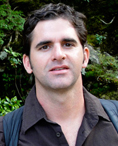

HyDROS Team Members
Hydrological Remote Sensing Research Group
Faculty and Scientists
-
Yang Hong
Professor
CEES / SoM | NWC 4610
(405) 325-3644 yanghong@ou.edu -

JJ Gourley
Adj. Associate Professor
SoM / NOAA NSSL | NWC 4745
(405) 325-6472 jj.gourley@noaa.gov -
 Pierre Kirstetter
Research Scientist, Adj. Faculty
ARRC / CEES | NWC 4642
Pierre Kirstetter
Research Scientist, Adj. Faculty
ARRC / CEES | NWC 4642
(405) 325-6092 pierre.kirstetter@noaa.gov -
 Ke Zhang
Research Scientist
NWC 3108
Ke Zhang
Research Scientist
NWC 3108
(405) 325-1343 kezhang@ou.edu -
 Aondover Tarhule
Professor
NWC 3630
Aondover Tarhule
Professor
NWC 3630
(405) 325-7228 atarhule@ou.edu -
Jeff Basara
Associate Professor
NWC 5238
(405) 325-1760 jbasara@ou.edu -
Hernan Moreno
Assistant Professor
SEC Suite 662
(480) 399-0571 moreno@ou.edu -
David A. Sabatini
David Ross Boyd Professor
CEC 301B
(405) 325-4273 sabatini@ou.edu -
Randall Kolar
David Ross Boyd and Austin Presidential Professor
CEC 334
(405) 325-4267 kolar@ou.edu -
Laura Alvarez
Research Scientist and Lecturer
SEC Suite 676
(405) 441-4434 alvarez@ou.edu -
Teshome Yami
Research Scientist
CEES | NWC 4612
Teshome.L.Yami-1@ou.edu
-
Tiantian Yang
Assistant Professor
NWC 4630
(405) 325-4216 tiantian.yang@ou.edu -
 Humberto Vergara
Research Scientist
CIMMS | NWC 4730
Humberto Vergara
Research Scientist
CIMMS | NWC 4730
(405) 325-6489 humber@ou.edu
Post Doctoral Fellows, Visiting Professors and Visiting Scholars
-
Xiangyu Luo
Post-doc
COE/CEES | NWC 4642
xyluo@ou.edu
-
Liang Gao
Post-doc
CEES | NWC 4640
Liang.Gao-1@ou.edu
-
Shang Gao
Post-doc
CEES | NWC 4803
Shang.Gao@ou.edu
-
Jiaqi Zhang
Post-doc
CEES | NWC 4803
jiaqi.zhang@ou.edu
-
Changchun Xi
Visiting Scholar
CEES | NWC 4646
Changchun.xu-1@ou.edu
-
Zeeman Chen
Visiting Professor
CEES | NWC 4803
c.zeemen@ou.edu
Graduate Students
- Zhen Hong Geoinformatics NWC 4650 Zhen.Hong-1@ou.edu
-
Laura Holtzman
Geography and Environmental Sustainability
NWC 4730
lauraholtzman@ou.edu
-
Mengye Chen
CEES
NWC 4803
mchen15@ou.edu
-
Andrea Tavera
Exchange Student
Environmental Engineering, El Bosque Univ.
ataverap@unbosque.edu.co
-
Jorge Duarte
Research Scholar
ARRC | NWC 4630
jaduarteg90@gmail.com
-
Soumaya Nabih
Fulbright Scholar
NWC 4650
Soumaya.Nabih-1@ou.edu
- Zhi Li COE/CEES NWC 4650 li1995@ou.edu
-
Noah Brauer
Research Assistant
CAGS/SOM | NWC
nbrauer@ou.edu
-
Devon Woods
Research Assistant
CEES/SOM | NWC
woods.devon.j@ou.edu
Undergraduate Students
-
Jorge Andrés Celis R
Visiting Scholar
CEES | NWC
Jorge.A.Celis.Rodriguez-1@ou.edu
-
Ziyu Ding
Visiting Scholar
CEES
ding.ziyu@ou.edu
Collaborators
-
 Liangzhi You
Senior Research Fellow, Program Leader
International Food Policy Research Institute (IFPRI)
l.you@cgiar.org
Liangzhi You
Senior Research Fellow, Program Leader
International Food Policy Research Institute (IFPRI)
l.you@cgiar.org
-
Naiyu Wang
Assistant Professor
CEES
(405) 325-1489 naiyu.wang@ou.edu -
 Hongjie Xie
Visiting Professor
LRSG UTSA
hongjie.xie@utsa.edu
Hongjie Xie
Visiting Professor
LRSG UTSA
hongjie.xie@utsa.edu
-
 Emmanouil Anagnostou
Professor
University of Connecticut
manos@engr.uconn.edu
Emmanouil Anagnostou
Professor
University of Connecticut
manos@engr.uconn.edu
- Robert Adler Senior Research Scientist University of Maryland radler@umd.edu
-
Walter Petersen
Field Support Office Chief
NASA/GSFC
walt.petersen@nasa.gov
-
 Joseph Turk
NASA/JPL
Joseph.Turk@jpl.nasa.gov
Joseph Turk
NASA/JPL
Joseph.Turk@jpl.nasa.gov
-
 Ning Lu
Professor
Colorado School of Mines
ninglu@mines.edu
Ning Lu
Professor
Colorado School of Mines
ninglu@mines.edu
- Qing Cao Research Scientist EEC qingcao@eecradar.com
- Sadiq Khan Research Scientist National Water Center sadiq@ou.edu
-
 Sheng Chen
Postdoc Research Fellow
CEES | NWC 4803
Sheng Chen
Postdoc Research Fellow
CEES | NWC 4803
(405) 325-1140 chenshengou@ou.edu -
 Yixin Wen
SoM
NWC 4650
YixinWen@ou.edu
Yixin Wen
SoM
NWC 4650
YixinWen@ou.edu
Alumni
- Xianwu Xue Research Scientist, CEES, NWC 4640, xuexianwu@ou.edu
- Lacey Swope Meteorologist, KWTV NEWS9
- Martin Calianno Alumni
- Alireza Shokoohi Alumni
- Julien Lagrange Alumni
- Wenjuan Liu Alumni
- Jun Wang Alumni
- Pradeep Adhikari PhD Student, OU Geography
- Li Li Alumni
- Zonghu Liao Associate Professor, China University of Petroleum
- Lu Liu PhD student, University of Maryland
- He Chen Alumni
- Trevor Grout Surface Water Hydrologist, USGS
- Lidon Saura Alumni
- Bin Yong Hohai University
- Jiahu Wang PhD, Associate Professor, Hohai University
- Zengxin Zhang Alumni
- Shanhu Jiang Alumni
- Lynn Zhang Alumni
- Gaili Wang Alumni
- Zhe Li Alumni
- Mc-cloud Katjizeu Hydrologist, Namibia Department of Hydrology
- Nicole C. Grams Weather Fusion
- Zhidan Hu Alumni
- Huan Li GIS
- Lei Qiao Oklahoma State University
- Umar Khatta Alumni
- Lilly Rose Lagadec Universite de Grenoble, France
- Celine Lutoff Universite de Grenoble, France
- Saber Moazami Alumni
- Xiaodi Yu Alumni
- Junjun Hu Alumni
- Qinshu Li liqinshu10@gmail.com
- Wentao Zhang zhangwentao@pku.edu.cn
- Jun Li lijun_more@126.com
- Weiyue Li lwy326@gmail.com
- Gina Hodges Devon Energy Fellowship
- Zhongxue Zhou Visiting Professor
- Xiaogang He Visiting Scholar
- Yu Zhang Postdoc Research Fellow (CEES)
- Zengchao Hao Alumni
- Lihua Tang Visiting Professor, Tsinghua University
- Zsanett Kopecskó Research Scholar
- Jill Hardy SoM Fellowship
- Marusa Spitalar Alumni
- Thibaut Wassner Alumni
- Maria Moreno Alumni
- Camila Jurado Alumni
- Paola Gonzalez Alumni
- Jiayuan Lin Visiting Scholar, CEES
- Pauline Jaunet Alumni
- Brandon Smith Alumni
- Marine Giroud Alumni
- Nicholas Carr Alumni
- Haiyan Huang Postdoctoral Researcher
- Bin Yang Visiting Scholar
- Yong Ye Visiting Scholar
- Xiaohua Xiang Visiting Scholar, CEES
- Xiaoling Wu Visiting Scholar, CEES
- Lahcen Benaabidate Visiting Scholar, CEES
- Xinyi Shen Alumni
- Jinsong Deng Alumni
- Zhanming Wan Geoinformatics
- Na Yang Visiting Scholar, CEES
- Abebe Sine Gebregiorgis Postdoctoral Researcher
- Yi Liu Visiting Scholar, CEES
- Wenyu Yang CEES
- Negar Karbalaee Visiting Scholar, CEES
- Yaoyao Zheng Meteorology
- Zac Flamig SoM Fellowship
- Robert (Race) Clark III SoM Fellowship
- Haijun Liu Visiting Scholar, CEES
- Jinping Zhang Visiting Scholar, CEES
- Sungmin O Visiting Scholar, CEES
- Galateia Terti Alumni
- Elizabeth Argyle Alumni
- Ben Toms Alumni
- Shanshan Luo Alumni
- Wei Wan Visiting Scholar, CEES
- Yan Ye Visiting Scholar, CEES
- Manabendra Saharia Alumni
- Yan Shen Visiting Scholar, CEES
- Pierre-Alain Ayral Visiting Professor, CEES
- Jessica Erlingis SoM Fellowship
- Emad Hasan Post-doc, Geoinformatics
- Yingzhao Ma Visiting Scholar, CEES
- Meihong Ma Visiting Scholar, CEES
- Chunfen Zeng Visiting Scholar, CEES
- Marc Mandement Visiting Intern, ARRC
- Zhongfei Li Visiting Scholar, CEES
- Chen Xu CEES
- Bo Rao CS
- Xirong Guo Visiting Scholar, CEES
- Xiaona Zhang Visiting Scholar, CEES
- Ming Zhong Visiting Scholar, CEES
- Xiaoqian Pan Alumni
- Christopher Bednarczyk Grad School Texas Tech
- Lindsay A. Ross Alumni
- Brian J. Squitieri Grad School Iowa State
- Megan N. Salisbury Alumni
- Juan G. Arango Calderon Alumni